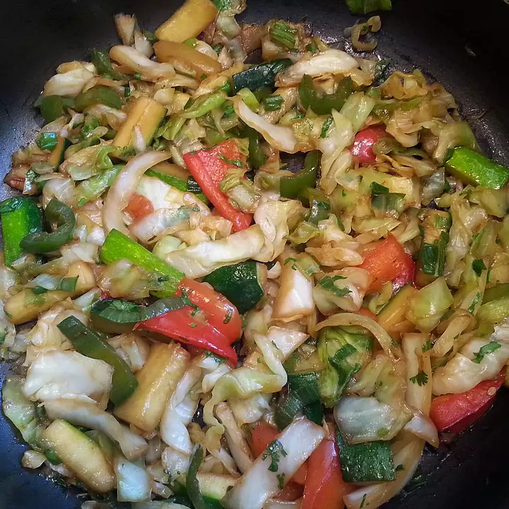

Stir Fried Wok Vegetables

Description
This is a simple, Asian-style side dish of stir fried vegetables out of the wok.
Ingredients
- 2 tablespoons vegetable oil
- 1 tablespoon minced fresh ginger (Optional)
- 3 serrano chile peppers, seeded and chopped (Optional)
- ½ cup baby corn, cut in half
- 1 red bell pepper, seeded and cut into strips
- 2 pounds bok choy - stalks halved and cut into 1/4-inch sticks, leaves halved, separated
- 3 cups fresh bean sprouts
- ¼ cup Asian fish sauce (nuoc mam or nam pla)
- 3 tablespoons Chinese oyster sauce
- 4 green onions, thinly sliced
- 2 tablespoons chopped cilantro leaves (Optional)
- 2 tablespoons toasted sesame seeds (Optional)
Steps
- Heat vegetable oil in a wok over high heat. When the oil is hot, stir in ginger and minced chiles; cook and
stir until the ginger is fragrant, about 30 seconds. Add baby corn, red pepper, and bok choy stalks; stir
fry until the red pepper has begun to soften, about 3 minutes.
- Stir in bok choy leaves and bean sprouts; cook until the leaves have darkened and wilted, 1 to 2 minutes.
Pour in fish sauce and oyster sauce; sprinkle with green onions, and stir together. Serve sprinkled with
chopped cilantro and toasted sesame seeds.